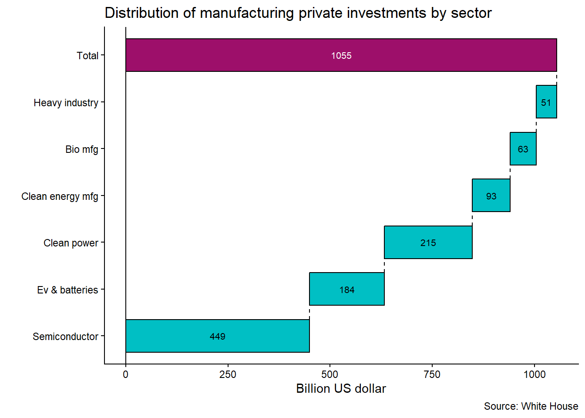

U.S. Economic Data at a Glance
What economic cycle are we in?
Gross Domestic Product
Real gross domestic product increased at an annual rate of 2.8% in the third quarter of 2024, compared with 3% in the second quarter, accordind to the second estimate(November 27,2024). Drivers are consumer spending, exports, federal government spending, and nonresidential fixed investment.
Personal consumption expenditures increased 3.5%, compared with 2.8% in the second quarter, according to the second estimate(November 27,2024:T1).
Disposable personal income increased $122.9 billion, or 2.3%, in the third quarter, compared with an increase of $120.1 billion in the second quarter. Real disposable personal income increase 0.8%.
Personal saving was $934.4 billion in the third quarter. The personal saving rate as a percentage of disposable personal income was 4.3% in the third quarter , compared with 4.9% in the second quarter, according to the second estimate(November 27,2024:T8)
Gross private domestic investment(% change from proceding period) increased 1.1% in the third quarter, compared with 8.3% in the second quarter, according to the second estimate(November 27,2024:T1). There was a 10.6% increase in equipment in the third quarter, compared to 9.8% in the second quarter.
Government consumption expenditures and gross investment(% change from proceding period) was 5% in the third quarter compared with 3.1% in the second quarter.
Source: Bureau of Economic Analysis
Inflation
The annual inflation rate for the United States was 2.6% for the 12 months ending October, compared to the previus rate increase of 2.4%, acording to U.S. Bureau of Labor Statistics data published on November 13, 2024.
The CPI price index for October increased 0.2% from the preceding month.
| Item | MoM | YoY |
|---|---|---|
| CPI overall | 0.2 | 2.6 |
| Food | 0.2 | 2.1 |
| Energy | 0.0 | -4.9 |
| Services | 0.3 | 4.8 |
| Shelter | 0.4 | 4.9 |
- The CPI for November 2024 is scheduled to be released on December 11, 2024, at 08:30 a.m. (ET).
Source: Bureau of Labor Statistics
- From the same month over year ago, the consumer price index (CPI) for September increased 2.58%, acording to Federal Reserve Economic Data.

Source: Federal Reserve
Interest rates
- United States Central Bank Rate stands at 4.75%, following the most recent adjustment in November 2024.
Our monetary policy actions are guided by our dual mandate to promote maximum employment and stable prices for the American people. We see the risks to achieving our employment and inflation goals as being roughly in balance, and we’re attentive to the risks to both sides of our mandate.
At today’s meeting, the Committee decided to lower the target range for the federal funds rate by 1/4 percentage point, to 4 1/2 percent to 4 3/4 percent. This further recalibration of our policy stance will help maintain the strenght of the economy and the labor markeet and will continue to enable further progress on inflation as we move toward a more neutral stance over time.
We know that reducing policy strain restraint too quickly could hinder progress on inflation. At the same time, reducing policy restraint too slowly could unduly weaken economic activity and employment.
— Jerome Powell
There was a signal in the Jackson Hole’s speech, which marked the end of the four-year cycle of increase in the interest rates by the FED.
The new cycle attempts to normalize economy, including indicators like the U.S. interest rate curve, according to the averages of the last hundred years.
The decision demonstrates FED’s concern for the lower end of the labor market, while de high end is still very tight.
Normality is a positively sloped yield curve and we think the terminal rate in FED funds is 3%. Where should 10 years be if we’re at 3%? We should at least be 100 to 150 basis point positively sloped.
— Gary Cohn, VP of IBM
Some indicators that may be evaluated during the next three months are:
Oil.
Commodities.
Shelter 2025 (new tenant rents vs old tenant rents).
Source: Federal Reserve
Labor Market
- One important indicator of labor market is the continuing claims that track the number of residents filing for ongoing unemployment benefits in a given week. The number of continuing claims for the week ending September 21, 2024 is 1.826 million. Less than the four-week moving average of 1.829 million. Meanwhile the number of initial claims for the week ending sep. 21, 2024 was 225.000 very close the four-week moving average of 224,250.

- Another importat labor market indicator is aggregate hours worked. The chart below shows the average weekly hours of all employees, total private. The first thing you see when the economy is slowing down is a reduction in job openings. That is the first wave. The secong wave that you see is the number of hours worked. And that is a very important metric because when you’re cutting hours, the next step is to actually cut positions.

Source: Federal Reserve and U.S. Bureau of Labor Statistics and U.S. Departament of Labor
10-Year Treasury bonds
United States Central Bank Rate stands at 4.75%, following the most recent adjustment in November 2024.
The chart below shows the United States 10-Year Government Bond yield.

Source: Yahoo finance, FRED
Yield Curve

Sectors 2Q24
Overall
Revenue’s cash flow is a challenge which has a short-term effect on supply chains, labor market, and debt costs as some of them are backed by revenue. Generally, in these cycles, highly leveraged companies tend to file for bankruptcy which are important to observe, mainly due to volatility. The perception of high interest rates and monetary tightening make it difficult to pass on prices to the consumer, leading business to adjust their processes striving for efficiency. Other behaviors:
Temporary rise in unemployment rates, however withour sudden moviments. The job losses begin at the lowest rungs in terms of skills, educational attainment, income making capacity. This indicators are being closely monitored by FED officials and the signals can be seen in Mr. Powell’s statements.
Decisions by companies towards reducing costs(COGS) and operating expenses(SG&A).
Temporary increase in the cost of capital for privet debt.
Supply chain reorganization.
Increase of risk of plain vanilla recession.
Agroindustry
2023 was an incredible year for agriculture, with high productivity for wheat and corn. In 2024, the harvest is a little late(e.g South Dakota area). There was high intensity of rainfall at the beginning of planting with mild temperatutes, causing the crop not to develop as much as in 2023. During the wheat harvest, usually in August, the corn needs more rain to fill the grain, but this year there was not so much during this period.
The distortions generated during the pandemic is make 2024 a year of adjusments that are being faced by growers, agricultural auto manufacturing, and machinery and equipment sales, temporarily affeting jobs.
Looking for agricultural prices, they are still not good. The expectation is not for a bad year, but it will not be as good as 2023. Sales of new equipment have fallen, making it necessary to adjust costs and expenses in companies such as John Deer and CNH industrial.
Automotive
The automotive industry faces many challenges in 2024. Slowing growth, increased competition, supply chain disruptions generated during the pandemic and business decisions caused distortions in costs and prices that grew way above the population’s income and general inflation rates. This process may take a few years to stabilize.
The volume of new car sales does not follow the same trend as population growth. It requires a deeper analysis to identify cause-and-effect relationships, but for now, the hypotheses raised are accessibility and the durability of the vehicles Autoline Network (2024).
From a price perspective, historically, it takes 25 weeks of average household income to buy a new vehicle. The average household income in 2024 is $75.000($1.400 per week) which would be enough to buy a vehicle worth $36.000 dollars.
The age of the vehicles on the road in the United States is 12.6 years acording to Parekh and Campau (2024)

- Financial data from auto industry in the second quarter of 2024.

- Reducing costs and prices, increasing household income, and finding more sources of revenue such as subscription services are some options that can be observed in the market.
Transportation
There was overcapacity in carrier population during the period from 2020 to 2023 due to demand that has been inconsistent over time and is currently undergoing adjustments. However, capacity still presents high values in relation to volumes pressuring agents to adjust their operations in striving for efficiency gains. Some of those carriers are contracting and reducing their fleets sizes in order to move forward. On the other side the carriers population are reduced in 32.500 from december of 2022 to june of 2024.
Tender rejections are currently in 4.5%, and diesel prices are $3.81 per gallon on average.
Dry van in spot market currently $1.96 per mile 0.2% YoY and -11.5% over five years(2019).
Reefer in spot market currently $2.30 per mile -1% YoY and -9% over five years(2019).
Flat bed in spot market currently $2.34 per mile -1% YoY and -7% over five years(2019).
Technology
In 2024 investments in disruptive technologies continue to show accelerated growth. The highlight has been in generative AI, which is unlocking possibilities for innovation between interconnected processes such as robotics and augmented reality.
Factors such as macroeconomic, geopolitical environment, and intense competition influence the adoption of technology as alternatives to improve operational efficiency in business.

- The innovation process has accelerated, driven by the development of large generative AI models, known as foundation models. These foundation models are then utilized by specialized applications that build upon them to perform more specific tasks. Finally, traditional processes are leveraging the applications to achieve efficiency gains, create new processes, and develop new value-added products.
Infraestructure
Computing: Amazon, Google, Microsoft, Nvidia
AI foundation models: OpenAI(Msft), Anthropic(Google/Amazon), Cohere(Nvidia)
Model development & deployment: Modular(Google)
Systhetic data: Hazy(Microsoft)
Horizontal AI
Horizontal AI refers to AI systems that have a broad range of capabilities and can be applied across multiple industries, domais, or tasks. These systems are often more general-purpose and can be trained on a wide range of data sources(e.g. natural language processing in virtual assistant, general purpose machine learning frameworks like pytorch or tensorflow, cognitive architectures etc.)
AI commpanions(autonomous agents): Adept e Inflection(msft, nvda), Cognosys e graft(goog), Imbue(amzn, nvda)
Digital Twins: blackshark.ai (msft), Siemens TeamCenter X, Autodesk Revit NVIDIA (2024)
HR: moonhub(goog), smartymeet(amzn)
Productivity & knowledge management: essential AI(goog, nvda), Humata(goog), Redactabl(goog)
Marketing and sales: Outreach(msft), Speedy(goog)
Search: perplexity and twelve labs(nvda)
Stell tech: osmo(goog)
Software development: Bulder.ai (msft)
Vertical AI
Vertical AI are often designed to perform a specific task or set of tasks within a particular industry or domain, and to integrate with existing systems and workflows within an organization, making them useful for solving specific business problems.Theses systems are typically narrow in their focus and are trained on a specific dataset or set of rules to excel in the specific area(e.g. img recognition for medical diagnosis, sentiment analysis tools for custormer service, predictive maintenance for mfg equipment etc).
Agriculture: Bowery(goog)
Education: Elsa(goog)
Healthcare/life science: Charm, Generate Biomedicine, Genesis therapeutics, Lambic, Inceptive, Superliminal, flyweel(nvda), layer health, seismic, tidalflow(goog), paige, flyweel(msft)
Manufacturing: machina labs(nvda), nobble.ai(msft), veo robotics/symbotic, agility robotics, bionichive, mantis robotic, Modjoul, Vimaan(amzn).
Real Estate: jitty(goog)
Warehousing and logisticis: flymingo(amzn), gatik, invia, nautilus labs, netradyne, nextbillionai(msft) outtrider, serve(nvda)
Waste management: amp robotics(msft)
Housing market
The U.S. median home price in 2Q24 is $412.300 compared to $418.500 last year a decrease of 1.48%.
When observed from the perspective of supply and demand, the plot below shows the behaviors in more detail.
In 2024 home buyers are looking for better prices and interest rates, home offices continuing a popular feature, two family homes with smarter technologies and other factors that may be relevant such as a laundry room, ceilling fans, energy star rated windows, patio, hardwood floors in the living areas, and side-by-side kitchen sink, and close to fun and public transportation.
Some indicators that may be evaluated during the next three months are:
- Mortgage rates, increasing inventories, listing price drops, time homes are on market.
- Net new home orders that represent the number of new sales contracts that have been finalized and signed by buyers minus customer home order cancellations booked.
- Companies financial guidance such as Lennar, Toll Brothers, D.R. Horton, Pultegroup and KB Home.
Manufacturing
In 2024, the United States manufatured over 18% of global high-technology goods.This scenario is changing rapidly.
Looking at gross private domestric investment, it has been growing 7.6% in 2024. Below is an overview of private investments the manufacturing sector.

Looking at the manufacturing plants construction sites.
Semiconductor: TSMC (Phenix, AZ) , Wolfspeed(Pittsboro,NC), Intel(Licking County, OH), SK Hynix(West Lafayette, IN), IBM(Hudson Valley, NY), GlobalFoundries(Essex, VT), Samsung(Taylor, TX), Texas Instruments(Sherman, TX)
Batteries: Toyota (Liberty, NC), LG Energy(Queen Creek, AZ), Redwood (Reno, NV), Panasonic(De Soto, KS), Ford SK (Stanton, TN)
Biomanufacturing: Moderna(Marlborough,MA), Pfizer(Peral River, NY), Thermo Fisher(Greenville, NC), Novo Nordisk(Clayton, NC), Fujifilm(Holly Springs, NC), Genentech(Oceanside, CA)
Heavy Industry: Norsk Hydro(Cassopolis, MI), Altex Heat Exchanger(Columbus, MS), Nucor(Kingman, AZ), GE Appliances(Louisville, KY), JSW Steel(Mingo Junction, Ohio)
Clean Power: Tesla, Buffalo Branch Wind, Skipjack Offshore Energy, Engie NA,
Clean Energy Manufacturing: Boom Supersonic(Greensboro, NC), Electric Hydrogen(Devens, MA), Siemens Gamesa(Port of Coeuumans, NY)
In the training and labor force perspective, several ongoing initiatives such as educational programs, some specific to women in the semiconductor field such as Fresh Start Semiconductor Program PBS NewsHour (2024).
In 2023, there are approximately 1,476 community colleges in the United States. These institutions offer two-year programs, vocational training, and pathways to four-year universities. California, Texas, and New York hosting the largest numbers Wellington and Morse (2023). Community college students also are among the more diverse in postsecondary education acording to Education (2024)
References
Autoline Network. 2024. “Red Alert: New Car Sales Have Stopped Growing,” February. https://www.youtube.com/watch?v=B2wHh6sduVw.
Education, U. S. Department of. 2024. “Community Colleges: Building Pathways to the Future.” https://blog.ed.gov/2024/04/community-colleges-building-pathways-to-the-future/.
NVIDIA. 2024. “Building Digital Twins of Foxconn’s Robotic Factories,” June. https://www.youtube.com/watch?v=HjpwGgmt57U.
Parekh, Nishant, and Todd Campau. 2024. “Average Age of Vehicles Hits New Record in 2024.” IHS Markit, May. https://www.spglobal.com/mobility/en/research-analysis/average-age-vehicles-united-states-2024.html.
PBS NewsHour. 2024. “How Arizona Is Building the Workforce to Manufacture Semiconductors in the u.s.” June. https://www.youtube.com/watch?v=uR6xaHmqsDM.
Wellington, Sam, and Robert Morse. 2023. “An Analysis of What’s in the U.S. News Community College Directory.” //www.usnews.com/education/blogs/college-rankings-blog/articles/2023-07-13/an-analysis-of-whats-in-the-u-s-news-community-college-directory.